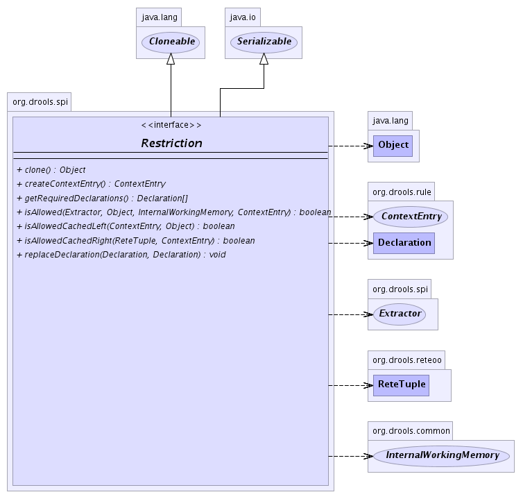

org.drools.spi
Interface Restriction
- All Superinterfaces:
- java.lang.Cloneable, java.io.Serializable
- All Known Implementing Classes:
- AbstractCompositeRestriction, AndCompositeRestriction, LiteralRestriction, OrCompositeRestriction, ReturnValueRestriction, VariableRestriction
public interface Restriction
- extends java.io.Serializable, java.lang.Cloneable
-
- 
getRequiredDeclarations
Declaration[] getRequiredDeclarations()
isAllowed
boolean isAllowed(Extractor extractor,
java.lang.Object object,
InternalWorkingMemory workingMemory,
ContextEntry context)
isAllowedCachedLeft
boolean isAllowedCachedLeft(ContextEntry context,
java.lang.Object object)
isAllowedCachedRight
boolean isAllowedCachedRight(ReteTuple tuple,
ContextEntry context)
createContextEntry
ContextEntry createContextEntry()
replaceDeclaration
void replaceDeclaration(Declaration oldDecl,
Declaration newDecl)
- A restriction may be required to replace an old
declaration object by a new updated one
- Parameters:
oldDecl - newDecl -
clone
java.lang.Object clone()